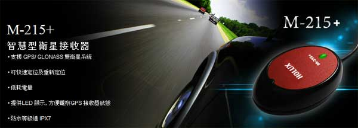
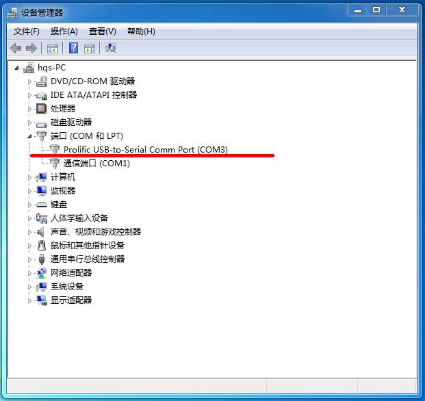
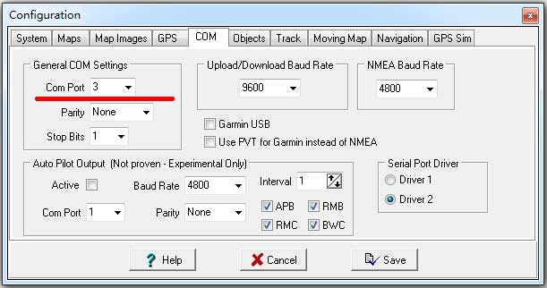
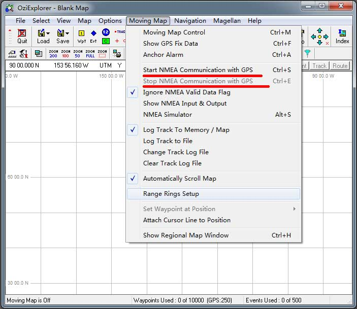
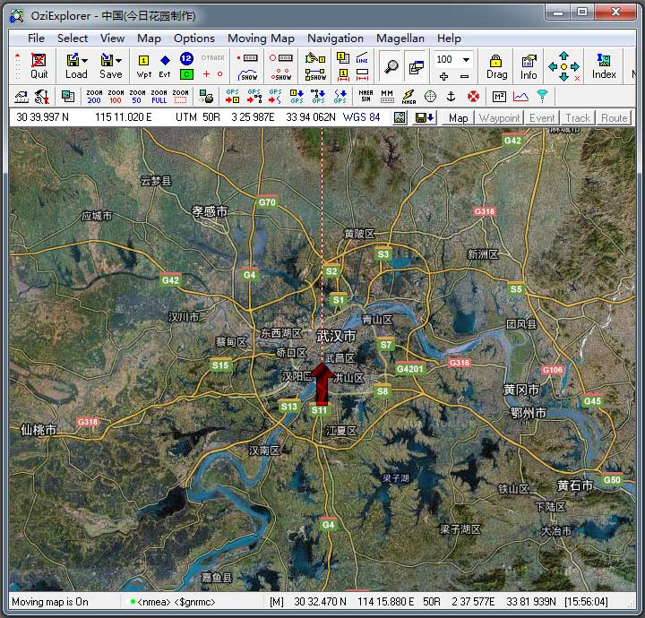

|
| 首页 | GeoTIFF | 今日花园Maps | OruxMaps | OZI | 资源 | 软件 | 联系 |
| 当前位置：OZI ---> 在WINDOWS笔记本电脑上用OziExplorer软件导航 |
在WINDOWS笔记本电脑上用OziExplorer软件导航因为笔记本电脑上没有GPS模块，所以要在WINDOWS笔记本电脑上用OZI软件来导航，就要需要外置USB接口的GPS模块，USB接口GPS模块推荐使用HOLUX公司的“M215+”这款产品，它可以接收GPS和GLONASS双卫星系统，定位速度快。 |

|
在电脑上第一次插上USB接口GPS模块时，要安装驱动程序（WIN7系统带有它的驱动程序，不需要自己另外找驱动程序），驱动程序安装完成后，GPS模块就有了一个虚拟的COM端口号，可以在“设备管理器”中查看这个端口号，如下图所示： |

|
要想在WINDOWS笔记本电脑上用OZI软件导航，就必须正确设置GPS模块的COM端口参数，方法是：先运行OZI软件，然后依次点击菜单项“File”---->“Configuration”，在弹出“Configuration”窗口中选择“COM”项，在一般情况下，这里只需设置端口号，其它参数保持默认值。如下图所示： |

|
依次点击菜单项“Moving Map”---->“Start NMEA Communication with GPS”，开启GPS功能就可以GPS导航了。如果要关闭GPS导航功能，可以依次点击菜单项“Moving Map”---->“Stop NMEA Communication with GPS”。如下图所示： |

|
开启GPS功能后，OZI导航的效果如下图所示： |

| www.todaygarden.net |
版权所有 2010-2020 今日花园 |